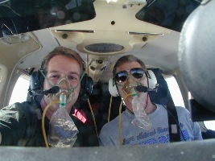
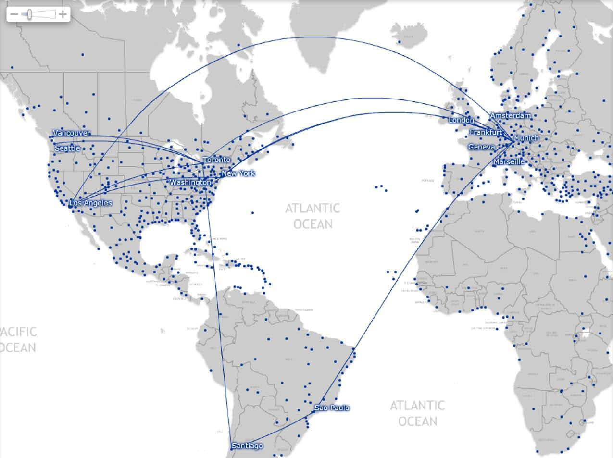

Gerard's travel schedule
Where's he at, anyway?
As of May 6, 2024, I became Director of Science
for
Lowell Observatory, in addition to
continuing my role as an Astronomer.
As of Jan 1, 2023, I concluded my tenure as
Chief Scientist for the Navy Precision Optical Interferometer (NPOI) with the
conclusion of
Lowell Observatory's involvement in the
NPOI partnership.
As of May 25, 2018, I completed my one-year tenure as
Director of the Navy Precision Optical Interferometer (NPOI) and shifted over to
the Chief Scientist role (still in residence at
Lowell Observatory, though).
As of August 31, 2011, I took a job as an
astronomer with Lowell Observatory.
As of September 1, 2007, I took a job with the European Southern Observatory in Munich, Germany,
as the
PRIMA Instrument Scientist for the
Very Large Telescope Interferometer.
As of September 9, 2002, I took a job with the Michelson
Science Center at the California
Institute
of Technology in Pasadena, California, as the Keck Operations Scientist, which quickly
morphed in to the position of Science Community Development Lead at the
MSC.
As of November 4, 1996, I took a job with the Jet Propulsion Laboratory in Pasadena,
California,
as an optical engineer working on the Keck Interferometer project.
Trips (somehow, this is more or less
complete since late 1995 - over 1,000,000 flight miles since then):
Pasadena, CA: Caltech KISS Lunar Interferometry Workshop: 17-23 Nov 2024
Paris, France: IAP interferometry workshop: 10-14 Sep 2024
San Diego, CA: Cool Stars 22: 23-29 Jun 2024
Yokohama, Japan: SPIE Astronomical Telescopes & Instrumentation: 11-22 Jun 2024
Seattle, WA: family visit: 5-10 Jun 2024
Phoenix, AZ: Phoenix Fan Fusion: 24-26 May 2024
New Haven, CT, and x-country drive back: SCSU visit: 4-9 May 2024
Seattle, WA: family visit: 6-9 Apr 2024
Waco, TX: eclipse 2024!: 4-15 Apr 2024
Christchurch and Wellington, NZ: Extreme Solar Systems V: 13-30 Mar 2024
Tucson, AZ: CHARA annual meeting: 10-13 Mar 2024
Aruba: vacation with Steph!: 1-6 Feb 2024
New Orleans, LA: AAS243: 5-12 Jan 2024
Washington, DC: NSF committee: 9-13 Aug 2023
Albuquerque, NM: AAS242: 4-8 Jun 2023
Orlando, FL and back to Flagstaff: transport of Optimast hardware from Redwire to Lowell: 20-26 May 2023
Atlanda, GA: CHARA Annual meeting: 12-18 Mar 2023
Jacksonville, FL: visit to Redwire: 1-3 Feb 2023
College Park, MD: SPICE team meeting: 29-31 Jan 2023
Seattle, WA: AAS241: 6-14 Jan 2023
Sydney, Australia: Visit to Sydney Uni.: 20-30 Sep 2022
Montreal, Canada: SPIE Astronomical Telescopes & Instrumentation: 16-23 Jul 2022
Pasadena, CA: speckle team meeting: 10-12 Jun 2022
[The great COVID hiatus]
New York NY: Visit to AMNH: 1-7 Mar 2020
Honolulu, HI: AAS235: 3-9 Jan 2020
Washington, DC: meeting: 1-6 Dec 2019
Bremen, Germany: Space Tech Expo 2019: 19-21 Nov 2019
Tucson, AZ: TENwest: 17-19 Oct 2019
Kona, HI: vacation: 21-27 Sep 2019
Maui, HI: AMOStech: 16-20 Sep 2019
Reykjavik, Iceland: Extreme Solar Systems IV: 18-24 Aug 2019
Dublin, Ireland: World Science Fiction Convention: 13-18 Aug 2019
Phoenix, AZ: Book of Mormon: 8-9 Aug 2019
Pasadena, CA: Meeting: 21-27 Jul 2019
Toronto, Ontario: Dunlap Instrumentation Summer School: 5-13 Jul 2019
Atlanta, GA: Dissertation committee meetings: 17-21 Jun 2019
Washington, DC: Meeting: 29-31 May 2019
Phoenix, AZ: Phoenix Fan Fusion: 23-26 May 2019
Pasadena, CA: JPL Workshop, 'Science Missions Enabled by Robotic In-Space Assembly': 28-29 Apr 2019
Philadelphia, PA: Villanova visit: 14-20 Apr 2019
Washington, DC: NASA Landscape: 30 Mar - 4 Apr 2019
Kitt Peak, AZ: NESSI@WIYN Observing: 17-19 Jan 2019
Washington, DC: NPOI meeting: 14-16 Jan 2019
Seattle, WA: ExoPAG19 / AAS233: 4-11 Jan 2019
Columbia, MD: Space Interferometry Workshop: 10-13 Dec 2018
Tucson, AZ: UofA visit: 3-4 Dec 2018
Pasadena, CA: Sagan-Michelson Workshop: 8-10 Nov 2018
NYC, NY: Dad's MoMath Talk: 5-8 Nov 2018
Las Vegas, NV: BD Party!: 3-4 Nov 2018
Kingman, AZ: ER Visit: 2-3 Nov 2018
Washington, DC: NPOI meeting: 15-17 Oct 2018
Washington, DC: NPOI meeting: 4-5 Sep 2018
San Jose, CA: WorldCon76: 18-19 Aug 2018
Boston, MA: Cool Stars 20: 28 Jul - 4 Aug 2018
San Jose, CA: Speckle team retreat: 20-22 Jul 2018
Seattle, WA: Lowell outreach event: 12-16 Jul 2018
Chicago, IL: Sigma Chi Grand Council 2018: 22-25 Jun 2018
Austin, TX: SPIE Astronomical Telescopes and Instrumentation, and family vacation: 9-20 Jun 2018
Los Angeles, CA: TEDx talk and Visit PlaneWave Instruments: 7-8 Jun 2018
New York City, NY:
talk at MoMath and family vacation: 7-15 May 2018
Atlanta, GA: Visit GSU: 4-7 Apr 2018
La Serena, Chile: Gemini-South observing: 29 Mar - 4 Apr 2018
Paris, France: CHARA Annual Science Review: 11-17 Mar 2018
London, UK: RAS Specialist Meeting: 8-11 Mar 2018
Munich, Germany:
ESO meeting 'Imaging of Stellar Surfaces': 3-8 Mar 2018
Los Angeles, CA: Visit PlaneWave Instruments: 24-25 Jan 2018
Jackson, FL: visit Made In Space; and Washington, DC: AAS231: 4-13 Jan 2018
Boston, MA: NASA Review Panel; and New Haven, CT: visting friends: 10-15 Dec 2017
Saint Louis, MO: Visit Washington Univ.: 17-19 Nov 2017
Pasadena, CA: Know Thy Star, Know Thy Planet meeting: 8-15 Oct 2017
Nice, France: AsterInter meeting: 1-8 Oct 2017
Maui, HI: AMOS 2017 meeting: 19-22 Sep 2017
Madras, OR: The total eclipse! : 11 Aug - 1 Sep 2017
Nice, France: IAU330, Gaia: 22-29 Apr 2017
Washington, DC: March for Science: 21-22 Apr 2017
Kona, HI: Visit Keck: 22-26 Mar 2017
Pasadena, CA: CHARA Annual Science Review: 12-18 Mar 2017
Munich, Germany: VLTI Community Days: 4-11 Mar 2017
Phoenix, AZ: Visit ASU: 17-18 Feb 2017
Pasadena, CA: Visit Caltech: 18-21 Jan 2017
Dallas, TX: AAS 229 meeting: 3-7 Jan 2017
Potsdam, Germany: Visit AIP: 2-11 Dec 2016
Pasadena, CA: NASA Keck TAC: 11-15 Oct 2016
Maui, HI: AMOS 2016 meeting: 20-24 Sep 2016
Covallis, OR: vacation: 9-19 Sep 2016
Seattle, WA: Whitman Sig reunion: 22-25 Jul 2016
Los Angeles, CA: California Homeschool Network meeting: 23-27 Jun 2016
Uppsala, Sweden: Cool Stars 19: 4-13 Jun 2016
Albuquerque, NM: SIAM meeting: 25-26 May 2016
Pasadena, CA: Theo's Soiree and CHARA visit: 29 Apr-3 May 2016
Pasadena, CA: NASA Keck TAC: 20-23 Apr 2016
New York City and Suffern, NY: visit AMNH and NEAF convention: 7-11 Apr 2016
Nice, France: 2016 Annual CHARA meeting: 11-17 Mar 2016
Los Angeles, CA: vacation: 5-9 Mar 2016
Nashville, TN: Victor Garcia PhD defense at Vanderbilt: 9-11 Feb 2016
Washington, DC: NPOI meeting: 31 Jan-2 Feb 2016
Phoenix, AZ: AWIS Jump Starting STEM Careers Symposium: 15-16 Jan 2016
Kissimmee, FL: AAS227 meeting: 4-10 Jan 2016
Washington, DC: NPOI meeting: 6-9 Dec 2015
Santa Barbara, CA: K2Con meeting: 2-6 Nov 2015
Maui, HI: AMOS Tech meeting: 14-19 Sep 2015
Canberra, Australia: Mount Stromlo visit: 20-21 Aug 2015
Sydney, Australia: Quantum Astronomy meeting: 15-24 Aug 2015
Honolulu, HI: IAU General Assembly XXIX: 8-15 Aug 2015
Washington, DC: NASA Review Panel: 7-10 Jun 2015
Tucson, AZ: NASA LBTI review: 27-28 Apr 2015
Phoenix, AZ: NASA AZ Space Grant Symposium: 17-18 Apr 2015
Socorro, NM: collaborator visit: 5-8 Apr 2015
Atlanta, GA: CHARA annual science workshop: 17-21 Mar 2015
Monterey, CA: DARPA workshop: 23-26 Feb 2015
Washington, DC: congressional visits: 20-22 Jan 2015
Seattle, WA: AAS225 meeting: 4-10 Jan 2015
Los Angeles, CA, and points south: extended family vacation cruise: 26 Dec 2014 - 4 Jan 2015
New Haven, Connecticut: colloquium at Yale University: 7-10 Dec, 2014
Santiago, Chile:
Santander Summer School: 20-26 Nov, 2014
Mount Wilson, California: CHARA Observing: 2-6 Nov, 2014
Seattle, WA: visit family, and Reno, NV: the Reno Air Races!: 1-15 Sep, 2014
Mount Wilson, California: CHARA Observing: 14-18 Aug, 2014
Muncie, IN: Sigma Chi Balfour Leadership Training Workshop: 30 Jul - 3 Aug, 2014
Annapolis, MD: NASA meeting: 21-25 Jul, 2014
Geneva, Switzerland and Montreal, Canada: IAU307 ("New
Windows on Massive Stars"), SPIE-Telescopes 2014, and the
2014 Interferometry Forum: 20-29 Jun, 2014
Santa Fe, NM: Santa Fe Conservancy Star Party: 22-26 May, 2014
Ames, IA: "Stars: Old, Young, and Variable" (Lee Anne Willson's
retirement party): 18-21 May 2014
Nashville, TN: Victor Garcia dissertation committee meeting at Vanderbilt: 30 Apr - 3 May 2014
Ann Arbor, MI: Annual CHARA Science Review: 23-27 Mar 2014
Key West, FL; a quick fly-in to attend my sister's wedding: 12-14 Feb 2014
Washington, DC;
223rd AAS meeting: 3-9 Jan 2014
Toledo, OH; Halifax, NS; Boston, MA; New Haven, CT; Altadena, CA; Las Vegas, NV; attend the Lowell Science Partner's
meeting, present colloquia at St. Mary's University & Boston University, visit friends in New Haven & Altadena, and then stop thru in Vegas:
18-28 Nov 2013
San Jose, CA; the Kepler-II Science meeting 3-5 Nov 2013
Barcelonnette & Saint-Michel-l'Observatoire, France; VLTI school &
OHP conference: 22-28 Sep 2013
Morro Bay, CA & Las Vegas, NV; vacation: 4-9 Aug 2013
Monterey, CA;
Giants of Eclipse meeting: 28 Jul-3 Aug 2013
Turku, Finland;
EWASS Special Sessions
3 and
7: 6-12 Jul 2013
Denver, CO; Visit friends & jet off to Finland via DEN: 4-14 Jul 2013
Ithaca, NY; Evolved
Star Workshop at Cornell: 15-21 Jun 2013
Chicago, IL: CTA Consortium Meeting: 27-31 May 2013
Phoenix, AZ: PHX Comicon: 23-26 May 2013
Santa Clarita, CA; colloquium at College of the Canyons: 2-4 May 2013
Phoenix, AZ: Stellar Stoichiometry Workshop: 12-13 Apr 2013
Colorado Springs, CO & Laramie, WY; colloquium at UWyo: 6-9 Mar 2013
Kona, HI; Keck observing: 20-22 Feb 2013
Maui, HI; Double Star meeting: 7-12 Feb 2013
Long Beach, CA;
221st AAS meeting: 5-11 Jan 2013
Mountain View, CA; Presenting a colloquium at NASA Ames: 28-29 Nov 2012
Boston, MA; Lowell Science Partners meeting: 7-9 Nov 2012
Beijing, China: IAU GA XXVII: 22-31 Aug 2012
Pasadena, CA; CHARA Observing: 16-19 Apr 2012
Atlanta, GA; CHARA Year 8 Science Review: 29 Feb-03 Mar 2012
Phoenix, AZ; Mini-vacation with the family: 17-20 Feb 2012
Kona, HI; Keck Interferometer observing: 08-13 Feb 2012
Austin, TX; AAS 219: 08-13 Jan 2012
Washington, DC; Lowell Science Partners meeting: 18-22 Oct 2011
Nice, France; Karovicova PhD Jury: 28-30 Jun 2011
Nice, France; MATISSE Progress Meeting: 16-18 Jun 2011
Rhine river valley, Germany; vacation: 02-05 Jun 2011
Heidelberg, Germany; PRIMA Pipeline Assessment meeting: 06-08 Jun 2011
Heidelberg, Germany; PRIMA Science Team meeting: 26-27 May 2011
Geneva, Switzerland; PRIMA data reduction meeting: 17-19 Apr 2011
Socorro, NM; Workshop on
Science with Optical Interferometry: 26 Mar - 02 Apr 2011
Dwingeloo, Netherlands; MATISSE Progress Meeting: 21-23 Mar 2011
Santiago, Chile; VLTI Operational Review: 02-05 Mar 2011
Atlanta, GA; CHARA Science Team Meeting: 28 Feb - 01 Mar 2011
Flagstaff, AZ; Lowell Observatory job interview: 12-17 Feb 2011
Cerro Paranal, Chile; PRIMA commissioning: 24 Jan - 8 Feb 2011
Geneva, Switzerland; PRIMA data reduction meeting: 16-18 Jan 2011
Seattle, WA; AAS 217: 7-14 Jan 2011
Baltimore, MD; meetings at STScI on HST FGS data reduction: Nov 29 - Dec 5 2010
Cerro Paranal, Chile; PRIMA commissioning: 6-19 Nov 2010
Cerro Paranal, Chile; PRIMA commissioning: 5-19 Sep 2010
Seattle, WA; Cool Stars 16: 29 Aug - 2 Sep 2010
Cerro Paranal, Chile; PRIMA commissioning: 1-15 Jul 2010
Exeter, England; Invited Colloquium: 18 Mar 2010
Groningen, The Netherlands; Invited Colloquium: 8 Mar 2010
Washington, DC; 215th meeting of
the American Astronomical Society: 2-10 Jan 2010
Barcelona, Spain; Pathways to Habitable Planets conference: 16-18 Sep 2009
Valle Romantica, Italy; Family vacation: 23-28 Aug 2009
Rio de Janerio, Brazil; IAU 2009: 03-14 Aug 2009
Cerro Paranal, Chile; PRIMA commissioning: 18-28 Jul 2009
Pasadena, California; "American Astronomical Society 214th Meeting": 9-10 Jun 2009
Leiden, The Netherlands; speaking at
"The Giant Branches" workshop: 10-16 May 2009
Amsterdam, The Netherlands; vacationing with friends: 22-28 Mar 2009
Nice,
France; annual CHARA science meeting: 15-21 Mar 2009
Viña del Mar, Chile; "Interferometric View of
Hot Stars": 1-7 Mar 2009
Santiago, Chile; VLTI Operations review & Interferometry Primer for "Interferometric View of
Hot Stars": 22-28 Feb 2009
Geneva, Switzerland;
ESPRI Science Team meeting: 16 Feb 2009
Cerro Paranal, Chile;
PRIMA commissioning: 25 Jan - 9 Feb 2009
Jihlava, Czech Republic;
visiting a college buddy: 4-8 Jan 2009
Cerro Paranal, Chile; PRIMA
commissioning: 17-30 Nov 2008
Granada, Spain; VLTI School: 5-7 Nov 2008
Cerro Paranal,
Chile; PRIMA commissioning: 14-28 Oct 2008
Los Angeles, CA & Seattle,
WA; vacation & PTI observing: Sept 2008
Cerro Paranal, Chile; PRIMA
'Big Bang' Trip: 1-15 Aug 2008
St. Andrews, Scotland;
Cool Stars 15: 20-26 Jul 2008
Geneva, Switzerland; PRIMA DDL PAE: 3-5 Jul 2008
Cannes, France;
vacation: 1-3 Jul 2008
Marseilles, France;
SPIE Telescopes & Instrumentation meeting
and vacation:
21 Jun-1 Jul 2008
Cerro Paranal, Chile; STS Commissioning run: 9-21
Jun 2008
Keszthely, Hungary; speaking at the
VLTI Summer
School: 2-4 Jun 2008
Boston, MA;
IAU 253: Transiting Planets:
18-23 May 2008
Nice, France; VLTI Calibration Workshop: 4-6 May
2008
Geneva, Switzerland; meeting with the Geneva Observatory PRIMA team
members: 27-29 Apr 2008
Vienna, Austria; presenting a colloquium at Vienna University:
7-8 Apr 2008
Arlington, VA, NSF Proposal Review panel:
26-29 Mar 2008
Paris, France; Blue Dots Team kick-off meeting: 20-21 Mar 2008
Cerro Paranal, Chile; my first trip to the VLTI site as PRIMA Instrument Scientist
(though I did have one visit previously, in 1999): 8-22 Jan 2008
Heidelberg, Germany; meeting with the PAOS team: 3 Jan 2008
Heidelberg, Germany; meeting with the PAOS team:
2 Oct 2007
Munich, Germany; relocation for the new job! 3 Sep 2007
Laramie, WY and Seattle, WA; various bits of pre-Germany-departure
activities: 15-21 Aug 2007
Mountain View, CA;
2007
Michelson Summer Workshop: 25-27 Jul 2007
Johnson City, TN;
Biggest
Baddest Coolest Stars Conference: 16-18 Jul
2007
Munich, Germany; job interview at ESO: 7-10 Jul 2007
Gull Lake, MI; vacation:
6-14 Jul 2007
Santorini, Greece;
Extreme Solar Systems conference:
22-30 Jun 2007
Las Vegas, NV; vacation:
12-13 Jun 2007
Honolulu, HI; AAS meeting:
27-31 May 2007
Tucson, AZ; ET observing at Kitt Peak:
9-11 May 2007
Northampton, MA; NASA Keck TAC meeting at Smith College:
13-15 Apr 2007
Boston, MA; MSC Transit Archive Working Group meeting:
22-25 Mar 2007
Socorro, NM; Colloquium talk at New Mexico Institute of Technology:
18-20 Mar 2007
Manhattan, NY; CHARA Year 3 Science Meeting / Tools of Planet Finding exhibit opening at
AMNH: 13-17 Mar 2007
Noordjwik, The Netherlands;
Herschel Open
Time Key Program Workshop: 20-21 Feb 2007
Seattle, WA;
AAS 209th meeting:
5-11
Jan 2007
Seattle, WA; family visit for Christmas: 24 Dec 2006 - 1 Jan 2007
Mountain View, CA; Scouting trip for the
2007 Michelson Summer Workshop:
12-14 Dec 2006
Baltimore, MD;
Astrophysics Enabled by the Return to the Moon meeting:
27 Nov - 1 Dec 2006
Tucson, AZ;
"Future of Interferometry" meeting: 12-15 Nov 2006
Berkeley, CA; NASA Keck TAC meeting:
25-28 Oct 2006
Kitt Peak, AZ; Exoplanet Tracker observing on the 2.1m telescope:
8-12 Oct 2006
Mammoth, CA, and Reno, NV; the
RENO
AIR RACES!: 14-18 Sep 2006
Washington, DC; Keck-IRTF MOWG:
10-12
Sep 2006
Seattle, WA; 20th high school reunion:
8-10
Sep 2006
Santa Barbara, CA; Kuhnert-Diaz Wedding:
2-4 Sep 2006
Prague, Czech Republic;
IAU
XXVIth General Assembly: 16-27
Aug 2006
The Netherlands; vacation: 11-16
Aug 2006
San Francisco, CA; Kepler review panel:
9-10 Aug 2006
Seattle, WA; family visit:
16-23
Jun 2006
Nice, France;
COROT
meeting: 5-10 Jun 2006
Orlando, FL;
SPIE
Telescopes meeting: 24-31 May
2006
Washington, DC; Navigator Program Science Forum:
7-8
May 2006
Tucson, AZ; NASA Keck TAC meeting:
20-22
Apr 2006
Tucson, AZ; 2nd annual CHARA science workshop: 19-23 Feb 2006
Hilo, HI and Kona, HI; Keck meetings:
8-11 Feb 2006
Washington, DC; AAS meeting:
7-11
Jan 2006
Seattle, WA; vacation with family:
15-24
Dec 2005
Noordjwik, The Netherlands;
COROT meeting at ESTEC:
4-10 Dec 2005
Columbus, OH; NASA Keck TAC meeting:
21-23
Sep 2005
Grand Canyon, AZ, and Reno, NV; the
RENO
AIR RACES!: 14-19 Sep 2005
Cambridge, UK;
DPS 2005:
3-10 Sep 2005
Flagstaff, AZ; presenting a colloquium for the Naval Observatory:
24-27 Aug 2005
Washington, DC; Keck-IRTF MOWG:
17-20
Aug 2005
Seattle, WA; vacation with family:
4-10
Aug 2005
Las Vegas, NV; gratuitous outing with friends:
6-9 Jun 2005
Minneapolis, MN;
206th
AAS meeting: 29 May - 2 Jun 2005
Bloomington, IN; presenting a colloquium for the IU Astronomy
Department: 20-23 Mar 2005
Hilo, HI; observing with the IRTF:
3-6
Mar 2005
Paris, France; meeting of the CHARA Science Team:
5-14 February 2005
Hilo, HI and Kona, HI; Keck meetings:
24-29 Jan 2005
San Diego, CA; 205th AAS meeting:
9-13
January 2005
San Jose, CA; Observing at Lick Observatory:
10-13 December 2004
Louisville, KY;
36th annual DPS meeting:
8-12 Nov 2004
Orlando, FL; NASA Keck TAC:
18 Oct
2004
Las Vegas, NV, on to Reno, NV and No. Lk. Tahoe, NV; the
RENO
AIR RACES!: 16-20 Sep 2004
San Francisco, CA; Kepler review panel:
8 Sep 2004
Denver, CO;
DCI finals:
5-7 Aug 2004
San Luis Obispo; Carlos & Kristen's wedding!:
29-31 July 2004
Abbotsford, BC & Seattle, WA; family reunion & vacation:
24-27 Jul 2004
Hamburg, Germany;
Cool Stars 13:
4-10 Jul 2004
Random points in England; vacation:
26
Jun - 4 Jul 2004
Glasgow, Scotland;
SPIE Astronomical
Telescopes & Instrumentation meeting:
19-26 Jun 2004
Denver, CO, & Laramie, WY; AAS meeting & bringing Bogart home:
31 May - 5 Jun 2004
Tahoe, NV; Steve & Carrie's wedding!:
28-31 May 2004
Hilo, HI; Deep Impact workshop:
29-30
Apr 2004
Kona, HI; Keck meetings: 19-21 Apr 2004
Washington, DC; NASA Keck TAC meeting:
15-18 Apr 2004
Kona, HI; Keck meetings: 23-27 Mar 2004
Hilo, HI and Kona, HI; Keck meetings:
18-22 Jan 2004
Atlanta, GA; 203rd AAS Meeting: 4-8 Jan 2004
Portland, OR; family vacation: 26 Dec 2003 - Jan 2 2004
Munich, Germany and Strasbourg, France; a visit to ESO and the 2003
ADASS
meeting: 5-17 Oct 2003
Kona, HI; Keck optics: 28 Sep - 3 Oct 2003
Washington, DC; Keck MOWG meeting: 24-26 Sep 2003
London, England; friend's wedding:
18-22 Sep 2003
Reno, NV and No. Lk. Tahoe, NV; the
RENO
AIR RACES!!: 12-15 Sep 2003
Monterey, CA: AAS
DPS
meeting:
1-6
Sep 2003
San Diego, CA; PTI observing: 1-4 Aug 2003
Flying-camping trip to northern CA:
17-21 Jul 2003
Washington, DC; first KISWG meeting: 1-2 Jun 2003
Nashville, TN; 202nd AAS Meeting: 24-29 May 2003
Flagstaff, AZ; meeting of the Keck TAC:
27-29 Mar 2003
Seattle, WA; my parent's 40th wedding anniversary: 20-23 Feb 2003
Kona, HI; Keck observing run: 9-14 Feb 2003
Hilo, HI and Kona, HI; Keck meetings:
2-6 Feb 2003
Kona, HI; Keck optics: 20-23 Jan 2003
Seattle, WA;
201st
AAS meeting: 5-9 Jan 2003
Cancun, Mexico;
IAU
215: Stellar Rotation: 10-16 Nov 2002
Boulder, CO; Keck TAC: 24-26 Oct 2002
Berkeley, CA; Keck
Science Meeting: 4-6 Oct 2002
Kona, HI; Keck optics: 19-26 Sep 2002
Washington, DC; Keck MOWG: 16-17 Sep 2002
Reno, NV and No. Lk. Tahoe, NV; the
RENO
AIR RACES!!: 13-16 Sep 2002
Kona, HI; SPIE conference on
Astronomical
Telescopes and Instrumentation; 22-30 Aug 2002
Rome, Italy and surrounding areas; honeymoon!
5 - 20 Aug 2002
Kona, HI; Keck optics: 22-30 Jul 2002
Boston, MA; instructing at the
Michelson
Interferometry Summer School: 23-28 Jun 2002
Uppsala, Sweden; invited review talk at the
IAU
Symposium No. 210: Modelling of Stellar Atmospheres: 16-22 Jun
2002
Seattle, WA; visiting family: 25 - 28 May 2002
Tucson, AZ; talk for the AIAA, EOST visit, and RCT consortium meeting:
15
- 17 May 2002
Kona, HI; Keck optics and a talk at UH-Hilo: 21 - 28 Apr 2002
Kona, HI; Keck optics: 24 Mar - 2 Apr 2002
Kona, HI; Keck optics: 24 Jan - 8 Feb 2002
Washington, DC; presentation at the AAS meeting: 6 - 10 Jan 2002
Seattle, WA; Christmas vacation:
26 Dec 2001 - 5 Jan 2002
Philadephia, PA; talk for the AIAA: 10 - 12 Dec 2001
Tucson, AZ; meeting with the RCT Planet Detection Team at PSI: 29
Nov - 1 Dec 2001
Kona, HI; Keck optics: 28 Oct - 7 Nov 2001
Kona, HI; Keck optics: 30 Sep - 9 Oct 2001
Kona, HI; Keck optics: 5 - 22 Sep 2001
Buffalo, NY; cross country in Arrow 458!:
14 - 16 Aug 2001
Gainesville, FL; visiting the Ciardis: 2 - 7 Aug 2001
Kona, HI; KISSG, Keck design meetings, Keck optics: 15 - 21 Jul
2001
Toronto, Canada; family reunion: 28 Jun - 3 Jul 2001
Flagstaff, AZ;
Michelson
Interferometry Summer School: 21-24 May 2001
Kona, HI; Keck optics:
13-19 May 2001
Kona, HI; Keck observing: 24 Apr - 4 May 2001
Tucson, AZ; meeting with the RCT Planet Detection Team at Planetary
Sciences Institute: 21 - 23 Apr 2001
Sydney and Melbourne, Australia; vacation and a colloquium at
University
of Sydney: 6 - 17 Apr 2001
Kona, HI; Keck optics: 10 - 17 Mar 2001
Seattle, WA; colloquium at the University of Washington: 7 - 9 Mar
2001
Kona, HI; Keck optics: 25 Feb - 6 Mar 2001
Kona, HI; Keck optics: 8 - 17 Feb 2001
Aberdeen & Baltimore, MD; Nu-Tek Precision Optical Corporation
& Space Telescope Science Institute: 4-7 Feb 2001
Kona, HI; Keck optics: 23 Jan - Feb 3 2001
Kona, HI; Keck optics: 10 - 20 Jan 2001
San Diego, CA;
197th
Meeting of the AAS: 7
-
10 Jan 2001
Kona, HI; Keck optics: 31 Dec 2000 - 6 Jan 2001
Seattle, WA; family vacation:
21 - 27 Dec 2000
Kona, HI; optics install: 27 Nov - 21 Dec 2000
Gainesville, FL; visiting the Ciardis: 17 - 20 Nov 2000
Kona, HI; optics install: 5 - 17 Nov 2000
Newark, NJ; Brian Fox wedding: 26 Oct - 29 Oct 2000
Kona, HI; optics install: 14 Oct - 21 Oct 2000
Kona, HI; optics install: 25 Sep - 30 Sep 2000
Reno, NV and No. Lk. Tahoe, NV; the
RENO
AIR RACES!!: 15-18 Sep 2000
Kona, HI; optics install: 29 Aug - 8 Sep 2000
Berkeley, CA; Michelson
Interferometry Summer School: 21-25 Aug 2000
Monterey, CA; vacation:
18-20 Aug 2000
Seattle, WA; family vacation: 27-31 Jul 2000
Kona, HI; optics install: 9-14 Jul 2000
Kona, HI; optics install: 12-17 Jun 2000
Laramie, WY; Bob Thompson's dissertation proposal presentation:
6-8 Jun 2000
Kona, HI; optics install: 8-12 May 2000
Kona, HI; optics install planning: 18-20 Apr 2000
Las Vegas, NV; just for the hell of it: 14-16 Apr 2000
Kona, HI; KISSG meeting, optics install planning: 12-23 Mar 2000
Kona, HI; Rail alignment & optics install planning: 20-28 Feb
2000
Kona, HI; Table & rail alignment: 30 Jan - 5 Feb 2000
Atlanta, GA & Gainesville, FL;
195th
Meeting of the AAS / meetings
with
David Ciardi: 7 - 16 Jan 2000
Kona, HI; Optical table installation: 3-7 Jan 2000
Portland, OR; visiting with my sister Christine: 27-29 Dec 1999
Seattle, WA; Christmas/New Year's with the family :
23 Dec 1999
- 2 Jan 2000
Seattle, WA; visiting my family: 17 - 20 Dec 1999
Kona, HI; Long Delay Line rail assembly: 5 Dec - 11 Dec 1999
Gainesville, FL; visiting the Ciardis: 18 - 28 Nov 1999
Kona, HI; Fast Delay Line rail alignment : 6 - 13 Nov 1999
Gainesville, FL; visiting the Ciardis:
22 - 25 Oct 1999
Kona, HI; Fast Delay Line rail assembly/alignment :
17 - 22 Oct
1999
Kona, HI; Fast Delay Line rail assembly : 3 - 8 Oct 1999
Reno, NV and No. Lk. Tahoe, NV; the
RENO
AIR RACES!!: 17-20 Sep 1999, with a side trip to Colorado
Springs,
CO: 17-18 Sep 1999
Gainesville, FL; visiting the Ciardis: 2-7 Sep 1999
Seattle, WA / Abbotsford, BC; my Uncle Pete's wedding : 20-23 Aug
1999
Kona, HI; Fast
Delay Line stanchion alignment : 15-20 Aug 1999
Kona, HI;
installation
of the first batch of telescope hardware for the Keck
Interferometer
(FDL rail stanchions)! : 18-28 Jul 1999
Chicago, IL; presenting
a
poster at the
194th
Meeting of the AAS: 30 May -
3
Jun 1999
Dana Point, CA; presenting posters at
"Working
on the Fringe", Optical/IR Ground/Space Interferometry conference, 24-27
May 1999
Chicago, IL; younger brother's wedding: 13-17 May 1999
Laramie, WY: 25-29 Nov 1998, 29 Oct - 1 Nov 1998, 30 Sep-4 Oct
1998,
23-26 Jan 1999, 26-29 Mar 1999, 8-10 May 1999
Kona, HI; visit to the Keck site/Keck headquarters:
21-25 Mar 1999
Antofagsto, Chile;
opening
symposium of the VLT: 27 Feb - 6 Mar 1999
Austin, TX; presented
a
poster (and co-authored
a
second) at 193rd
Meeting of the AAS: 5-9 Jan
1999
Gainesville, FL; presenting an invited colloquium at the University
of Florida: 19-22 Nov 1998
Kona, HI; visit to the Keck site: 13-16 Oct 1998
Seattle, WA; my dad's retirement party: 10-13 Oct 1998
Flagstaff, AZ;
Interferometry
Workshop at Lowell Observatory:
4-9
Oct 1998
Reno, NV and So. Lk. Tahoe, CA; the
RENO
AIR RACES!!: 18-21 Sep 1998
Salt Lake City, UT & drive back down to LA; because I'm nuts:
11-12
Sep 1998
London, England; visiting with my friends David, Kristi and Tasha
Marshall:
5-7
Sep 1998
Cambridge, England; a visit of the university/talk at the
Mullard
Radio Astronomy Observatory/tour of the
COAST
site: 2-4 Sep 1998
Montpellier, France;
IAU
Symposium #191: Asymptotic Giant Branch Stars: 27 Aug - 1 Sep
1998
Laramie, WY: 30 Jul - 2 Aug 1998
Seattle, WA; visiting with my family:
23-27 Jul 1998
San Diego, CA; presenting a poster paper at the
192nd
meeting of the AAS: 11 Jun
1998
Laramie, WY; visiting friends and giving an invited colloquium at the
University of Wyoming: 21-25 May 1998
Kona, HI;
SPIE Meeting on
Astronomical
Telescopes and Instrumentation: 19-29 Mar 1998
Catalina, CA/Ensenada, Mexico; vacation:
2-6 Mar 1998
Washington, DC;
191st
Meeting of the AAS: 5-11 Jan
1998
Rock Hill, SC: 23-28 Dec 1997
Seattle, WA; visiting with my family:
26-29 Nov 1997
Seattle, WA; visiting with my family: 24-27 Jul 1997
Seattle, WA; my niece's wedding: 13-16 Jun 1997
Charlotte, NC: 6-10 Jun 1997
Hawaii; trip to Mauna Kea for work on the
Keck Interferometer: 12-15 Feb 1997
Seattle, WA; Christmas with the family:
31 Dec 1996 - 2 Jan 1997
Denver, CO/Laramie, WY: 8-10 Nov 1996, 27 Nov - 1 Dec 1996, 20-23
Dec 1996, 10-12 Jan 1997, 20-24 Feb 1997, 21-23 Mar 1997, 25-29 Apr
1997,
9-12 May 1997, 23-26 May 1997
Seattle, WA; my younger sister's wedding:
3-8 Jul 1996
Oak Harbor, WA; a visit to my older sister & brother-in-law, and
achievement of my PADI Open Water
Dive
Certification: 16-22 May 1996
Pasadena, CA; a visit to the
Jet
Propulsion Laboratory: 1-4 May 1996
Cambridge, MA; a meeting of the
IOTA
consortium; 3-7 Apr 1996
San Antonio, TX;
AAS
Meeting: 13-18 Jan 1996
Dusseldorf, Germany: 12 Dec 1995 - 9 Jan 1996 - including
excursions
to Belgium, The Netherlands, Denmark, The Czech Republic, and Austria
Notable Dates:
3 Jun 2012: Anneke arrived! 3 weeks early!
7 Dec 2011: We moved into our own house.
3 Aug 2011: We moved to Flagstaff, AZ, from Munich.
8 Oct 2009: Pieter arrived! Only 3 days early!
3 Sep 2008: VLTI PRIMA first fringes.
24 Oct 2007: Willem arrived! A full week late!
3 Sep 2007: We moved to Munich, Germany, from Los Angeles.
4 Nov 2006: Ten year anniversary at JPL/Caltech.
7 Oct 2005: Gerrit arrived! A full ten days early!
4 Aug 2002: Stephanie and I got married.
12 Mar 2002: Received the JPL 2002
Ed Stone Award for Outstanding Research Publication.
4 Nov 2001 : Five year anniversary at JPL.
27 Jul 2001: The JPL Media Relations Office issues a press release on our research on Altair.
18 Jul 2001: Moved from La Canada to Altadena. Life in a real house now!
3 Mar 2001: First light on the Keck-Keck Interferometer. Four years of hard work have finally paid off. Now, on to the hard stuff!
1 May 2000: First JPL optics to ship to HI; we're 10 months out from first light on our big herkin' telescope!
18 Jul 1999: First JPL hardware delivered at the summit of Mauna Kea; six months of lab construction to follow.
24 Aug 1998: The Keck Interferometer passed its Critical Design Review (lots of travel to HI now!)
15 Aug 1998: Moving from Pasadena/Altadena to La Canada (within walking distance of JPL).
7 May 1998: Passed my FAA Private Pilot check ride (lots of local flying now).
4 Nov 1996 : First day of work at JPL. I moved to Pasadena, CA, to become a Member of the Technical Staff with the Spatial Interferometry
Group at The Jet Propulsion Laboratory.
29 Oct 1996 : Dissertation defense (for more information, see my research interests page).
Observing Runs: (300+ nights since mid-1994; please note,
somewhere in ~2001 I lost track and this part of the page is mostly
outdated now.)
Observing runs to
Keck:
12 Jan 2001, 1 Feb 2001, 8 Feb 2001, 19-22 Feb 2001 (first sid-sid
fringes at WMKO), 2-4 Mar 2001, 12-14 Mar 2001 (Keck-Keck first
fringes!),
5-7 Apr 2001, 2-3 May 2001, 31 May - 2 Jun 2001, 9-11 Aug 2001, 5-7 Oct
2001, 3-6 Nov 2001, 27-31 Jan 2002, 28 Mar - 1 Apr 2002, 24-27 Apr
2002,
21-26 Jun 2002, 28-29 Jul 2002
(at this point I lost track of Keck travel...)
Observing runs to
PTI:
18-20 Nov 1996, 3-5 Dec 1996, 12-14 Mar 1997, 17-19 Mar 1997, 24
Apr 1997 , 1-3 Jun 1997 , 17-18 Jun 1997 , 27-29 Jun 1997 , 5-7 Jul
1997
(Dual star astrometry), 9 Jul 1997 , 18-21 Jul 1997 (Spectroscopic
binaries)
, 22 Jul 1997 (Engineering) , 13-14 Sep 1997 (DSA), 3-6 Oct 1997 (SB's,
RS CVn stars), Apr 29 - May 1 1998 (Engineering), 18-22 Jun 1998 (Misc.
Science), 25-28 Sep 1998 (DSA), 5-6 Nov 1998 (Misc. Science), 16-19 Mar
1999 (Misc. Science), 1-2 Apr 1999 (Misc. Science), 21-25 May 1999
(YSOs),
10 Jul 1999, 29-31 Jul 1999, 12-14 Sep 1999, 8-10 Oct 1999 (ADC
Engineering),
30-31 Mar 2000 (Misc. Science), 23-26 Jul 2000, 30-31 Mar 2001 (Rapidly
rotating stars), 13-14 Oct 2001 (eps Eri), 26-27 Nov 2001 (eps Eri)
(at this point I lost track of PTI travel...)
Observing runs to
CHARA
on Mt. Wilson:
15-30(?) Jun 2004
Observing runs to
Lick
Observatory:
10-13 Dec 2004
Observing runs to
Palomar
60":
15-17 Jan 1999 (Adaptive Optics Coronagraph), 29 Jan 2000 (AOC)
Observing runs to
IOTA:
23-27 Jun 1994 , Sep 1994 (3 weeks) , 14-28 Mar 1995 , 5-16 Aqr
1995 , 5-13 Jun 1995 , 5-13 Jul 1995 , 1-8 Oct 1995 , 3-16 Mar 1996 ,
26
May-11 Jun 1996 , 1-16 Oct 1996 , 20-23 June 1997
Observing runs to
WIRO:
Mar 1994 (5 nights) , Jan 1995 (2 runs, 4 & 3 nights) , 9-10
Feb 1995 , 25-28 Aqr 1995 , 5-7 May 1995 , 21-24 Aug 1995 , 28 Nov-9
Dec
1995
Observatories/telescopes I have visited but not observed at:
COAST, VLTI, many of the other Mauna Kea observatories (IRTF, CFHT,
Gemini North, Subaru, CSO), Lowell (NPOI), Hamburger Sternwarte, Kitt
Peak, Kirtland AFB, and the VLA.
On the 'to visit' list: Maui, La Silla, La Palma, Narrabri, Siding
Spring, McDonald Observatory, Mt. Graham, and of course, Dome C.
Last updated: 13 Aug 2013
This page is managed by: Gerard
van Belle (gerard@lowell.edu)